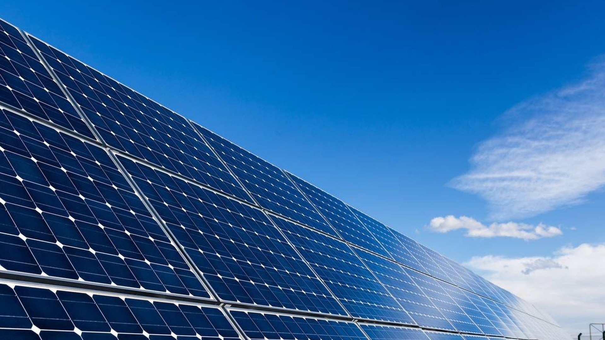
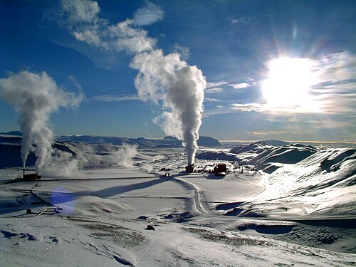

Die Windkraft ist die großtechnische Nutzung des Windes als erneuerbare Energiequelle.
Die Bewegungsenergie des Windes wird seit dem Altertum genutzt, um Energie aus der Umwelt für technische Zwecke verfügbar zu machen.
In der Vergangenheit wurde die mit Windmühlen verfügbar gemachte mechanische Energie direkt vor Ort genutzt um Maschinen und Vorrichtungen anzutreiben.
| Jahr | Nennleist.(GW) | Gesamtleistung Erneuerbare Energien |
|---|---|---|
| 2022 | 906 | 7321 |
| 2023 | 1021 | 8567 |
| 2024 | 1136 | 9029 |
Sonnenenergie(Strahlungsenergie)

Die Sonne emittiert große Mengen Energie, die als Solarstrahlung (elektromagnetische Wellen) die Erde erreicht.
onnenenergie lässt sich direkt oder indirekt vielfältig nutzen. Die direkte Nutzung erfolgt mit Photovoltaikanlagen sowie als Sonnenwärme.
Daneben „liefert“ die von der Atmosphäre und von der Erdoberfläche absorbierte Sonnenenergie mechanische, kinetische und potentielle Energie.
Geothermie (Erdwärme)

Die im Erdinneren gespeicherte Wärme stammt zum einen von Restwärme aus der Zeit der Erdentstehung zum anderen durch
verursachte Reibung zwischen fester Erdkruste und flüssigem Erdkern.
Sie kann für Heizzwecke (vor allem oberflächennahe Geothermie) oder auch zur Stromerzeugung (meist Tiefengeothermie) genutzt werden.
Strom kann im Übertragungsnetz nicht gespeichert werden, somit müssen die Stromein- und -ausspeisung immer gleich hoch sein.
Dies bedeutet, dass die Produktion und der Verbrauch von Energie stets im Gleichgewicht sein müssen. Dieses Gleichgewicht gewährleistet den sicheren und stabilen Betrieb des Netzes bei einer konstanten Frequenz von 50 Hertz.
Die europäischen Übertragungsnetzbetreiber stellen sicher, dass die Frequenz im europäischen Verbundnetz jederzeit eingehalten werden kann.
Zur Projektübersicht